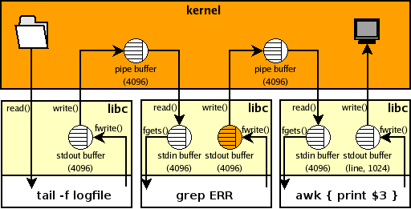
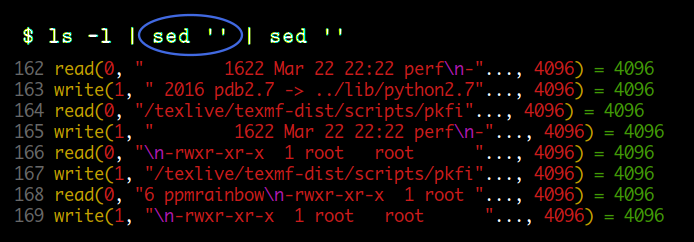
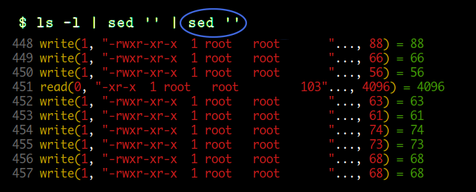
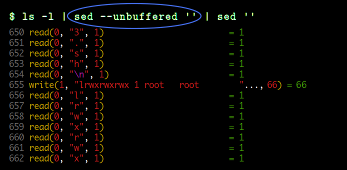
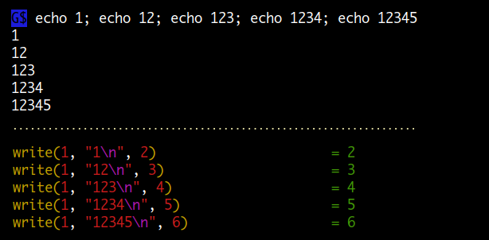
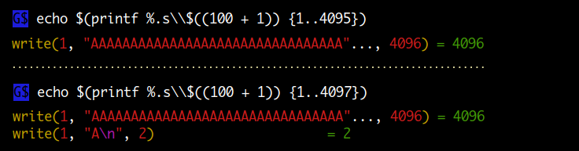

Buffering
입, 출력에 사용되는 read, write 시스템 콜은 기본적으로 버퍼를 사용하지 않습니다 ( unbuffered ). 따라서 매번 read, write 이 발생할 때마다 시스템 콜을 사용하기보다는 데이터를 메모리( 버퍼 )에 읽어 두었다가 read 가 발생하면 메모리에서 전달해 주고, 쓰기를 할 때는 버퍼가 찰 때까지 저장했다가 한번에 쓰기를 하는 것이 효율적입니다. 이와 같은 버퍼 관련 처리를 자동으로 해주는 것이 C standard library 입니다. 따라서 대부분 프로그래밍을 할 때 직접 시스템 콜을 사용하기보다는 C standard library 를 사용하므로 버퍼링과 관련해서 알아두어야 할 필요가 있습니다.
데이터를 입력받고 연산결과를 출력하는데 stream 을 이용하는 명령들은 내부적으로 버퍼를 이용합니다 ( grep, sed, awk ...). 명령 실행이 바로 종료되면 버퍼에 있던 내용도 모두 출력되므로 문제가 없지만 프로세스가 종료되지 않은 상태에서 출력을 지속한다면 버퍼와 관련해서 문제가 생길 수 있습니다.
다음은 프로세스 A 가 logfile 에 로그를 append 하면 tail 명령으로 실시간으로 데이터를 추출해서 프린트하는 명령인데 실행해보면 정상적으로 동작하지 않습니다. 프로세스 A 가 ERR 로그를 logfile 에 append 했으므로 파일에는 로그가 존재함에도 불구하고 grep, awk 명령을 거치면서 출력이 되지 않고 있는 것입니다. 나중에 로그가 쌓여서 출력할 데이터가 4096 bytes 가되면 그때 한번에 출력이 됩니다.
$ tail -f logfile | grep ERR | awk '{ print $3 }'
이와 같은 상황을 그림으로 나타내면 다음과 같습니다. 먼저 kernel 쪽 버퍼는 kernel 에서 사용하는 것으로 사용자가 컨트롤할 수 있는 부분이 아니고 버퍼링과 관련해서 문제가 되지는 않는다고 합니다. 사용자가 컨트롤할 수 있는 부분은 프로그램이 사용하는 버퍼인데 tail 명령에서는 -f 옵션을 주어 출력이 버퍼링 되지 않지만 grep 명령에서 출력이 버퍼링 되고 있는 것을 볼 수 있습니다.

http://www.pixelbeat.org/programming/stdio_buffering/
Buffering modes
Buffering modes 는 다음 3 가지로 구분해 볼 수 있습니다.
- line buffered : newline 을 만나면 출력합니다.
- full buffered : 버퍼가 차면 출력합니다.
- unbuffered : 버퍼링을 하지 않고 바로 출력합니다. (1 byte)
명령이 실행되면 자동으로 stdin, stdout, stderr 세 개의 stream 이 생성되는데 버퍼와 관련해서 각각 다음과 같은 특징이 있습니다. ( 기본적으로 새로 open 되는 stream 은 full buffered 입니다. )
- stdin : 터미널에서 입력을 받으면 line buffered or unbuffered 이고 그외는 full buffered 입니다.
- stdout : 터미널에 연결되어 있으면 line buffered 이고 그외는 full buffered 입니다.
- stderr : 항상 unbuffered 입니다. 그러므로 stderr 로 메시지를 출력하면 바로 표시가 됩니다.
위 예제의 경우를 적용해보면 tail 명령은 -f 옵션을 주었으므로 unbuffered 에 해당되고 grep 명령은 출력이 파이프에 연결되어 있으므로 full buffered 가되며 awk 는 터미널에 연결되어 있으므로 line buffered 가 됩니다. 그러므로 문제를 해결하기 위해서는 grep 명령의 출력 버퍼링을 수정해 주어야 합니다.
문제 해결 하기
버퍼를 이용하는 대부분의 명령들은 버퍼링으로 인해 발생할 수 있는 문제를 해결하기 위해 별도의 옵션이나, 함수를 제공합니다. 위에서 예로든 grep, sed, awk 명령 외에도 perl, python, java 같은 언어들도 모두 동일하게 적용됩니다. 이런 언어들은 보통 내부적으로 버퍼링을 컨트롤할 수 있는 함수를 제공합니다.
- tail : -f ( read, write unbuffered )
- grep : --line-buffered ( read 는 full buffered )
- sed : -u,--unbuffered ( write 는 line buffered )
- gawk : fflush(), close()
- perl : flush(), close(), $|
- tcpdump : -l
- python : -u , flush(), close()
- java : flush(), close()
그러므로 위의 문제를 해결하기 위해서는 다음과 같이 작성하면 됩니다.
$ tail -f logfile | grep --line-buffered ERR | awk '{ print $3 }'
버퍼와 관련된 옵션을 제공하지 않는 경우
모든 명령이 버퍼와 관련된 옵션이나 함수를 제공하는 것은 아닙니다.
다음의 경우 cut, tr 명령은 별도로 버퍼를 컨트롤할 수 있는 옵션을 제공하지 않아 문제를 해결할 수 없습니다.
$ tail -f access.log | cut -d ' ' -f1 | tr A-Z a-z | uniq
이럴 때에는 gnu coreutils 명령 중에 하나인 stdbuf 명령을 이용하여 해결할 수 있습니다.
$ tail -f access.log | stdbuf -oL cut -d ' ' -f1 | stdbuf -oL tr A-Z a-z | uniq
stdbuf
Usage: stdbuf OPTION... COMMAND
Options
-i, --input=MODE : stdin stream buffering 을 조정
-o, --output=MODE : stdout stream buffering 을 조정
-e, --error=MODE : stderr stream buffering 을 조정Modes
mode L : line buffered ( stdin 에는 적용되지 않음 )
mode 0 : unbuffered
full buffered 는 KB 1000, K 1024, MB 1000*1000, M 1024*1024 ... G, T, P, E, Z, Y 단위를 이용해서 버퍼 사이즈를 설정할 수 있습니다.
tee 명령같이 자체에서 버퍼링을 설정하는 경우나 dd, cat 명령같이 i/o 에 stream 을 사용하지 않는 경우에는 적용되지 않습니다.
출력 버퍼링 문제
다음은 coprocess 를 사용하는 예인데 sed, awk 명령의 stdout 이 파이프에 연결되어 있어 출력이 버퍼링 되고 있습니다. 그러므로 read 명령으로 연산 결과를 읽을 수가 없습니다.
$ coproc sed 's/^/foo/'
[1] 5907
$ echo bar >& ${COPROC[1]}
$ read res <& ${COPROC[0]} # 값을 읽을수가 없다.
^C
--------------------------------
$ coproc awk '{ print $1 + $2 }'
[1] 7999
$ echo 1 2 >& ${COPROC[1]}
$ read res <& ${COPROC[0]} # 값을 읽을수가 없다.
^C
다음과 같이 --unbuffered 옵션, fflush() 함수를 사용하여 라인단위 출력을 하면 해결할 수 있습니다.
$ coproc sed --unbuffered 's/^/foo/' # 출력은 line buffered
[1] 5993
$ echo bar >& ${COPROC[1]}
$ read res <& ${COPROC[0]}
$ echo $res
foobar
------------------------------------------
$ coproc awk '{ print $1 + $2; fflush() }'
[1] 8064
$ echo 1 2 >& ${COPROC[1]}
$ read res <& ${COPROC[0]}
$ echo $res
3
입력 버퍼링 문제
sed '1q' 는 입력받은 데이터에서 첫 번째 라인을 출력하고 종료하는 명령입니다.
echo 명령으로 3 개의 라인을 파이프를 통해 전달하였으므로 각 sed 명령에서
한 라인씩 프린트될 것 같지만 실제 결과는 첫 번째 라인만 출력되고 있습니다.
원인은 첫 번째 sed 명령의 input 버퍼로 3 개의 라인이 모두 저장되었기 때문입니다.
$ echo -e "111\n222\n333" | { sed 1q ; sed 1q ; sed 1q ;}
111
$ echo -e '111\n222\n333' |
echo "num1: $(read line; echo $line), num3: $(read line; read line; echo $line)"
num1: 111, num3: 333
$ echo -e '111\n222\n333' |
echo "num1: $(sed 1q), num3: $(read line; read line; echo $line)"
num1: 111, num3:
따라서 이와 같은 경우는 sed 명령의 -u | --unbuffered 옵션을 사용해야 합니다.
# 첫 번째 sed 명령에 -u 옵션사용
$ echo -e "111\n222\n333" | { sed -u 1q ; sed 1q ; sed 1q ;}
111
222
# 첫 번째, 두 번째 sed 명령에 -u 옵션사용
$ echo -e "111\n222\n333" | { sed -u 1q ; sed -u 1q ; sed 1q ;}
111
222
333
$ echo -e '111\n222\n333' |
echo "num1: $(sed -u 1q), num3: $(read line; read line; echo $line)"
num1: 111, num3: 333
$ echo -e '111\n222\n333\n444' |
echo "num1: $(sed -u 1q), num4: $(sed -nu 2q; sed -u 1q)"
num1: 111, num4: 444
STDIN 이 redirection 에의해 파일에 연결될 경우
parent 프로세스의 file descriptor 는 child 프로세스가 생성될 때 상속됩니다.
따라서 파일 포지션 또한 공유가 되므로 파일을 읽으면 파일 포지션이 자동으로
다음 라인으로 이동합니다.
다음의 경우 parent 프로세스에 해당하는 shell 에서 0< file 에의해 설정된 FD 가
child 프로세스에 해당하는 sed 명령들에 공유가 됩니다.
$ cat file
111
222
333
$ { ls -l /dev/fd/ ;} < file
total 0
lr-x------ 1 mug896 mug896 64 2020-09-26 17:19 0 -> /home/mug896/tmp/file
lrwx------ 1 mug896 mug896 64 2020-09-26 17:19 1 -> /dev/pts/12
lrwx------ 1 mug896 mug896 64 2020-09-26 17:19 2 -> /dev/pts/12
. . .
# sed 1q 에의해 FD 0 에서 라인 하나를 읽으면 파일 포지션이 다음 라인으로 이동한다.
$ { sed 1q; sed 1q; sed 1q ;} < file
111
222
333
$ { echo "num1: $(sed 1q), num3: $(read line; read line; echo $line)" ;} < file
num1: 111, num3: 333
----------------------------------------------
$ gcc -xc - <<\@ && ./a.out
#include <unistd.h>
#include <sys/stat.h>
#include <fcntl.h>
#include <stdio.h>
int main() {
int fd = open("tmp.txt", O_WRONLY | O_CREAT | O_TRUNC, 0644);
fork();
write(fd, "xyz", 3);
printf("PID: %d, SEEK_CUR: %ld\n", getpid(), lseek(fd, 0, SEEK_CUR));
return 0;
}
@
PID: 2744866, SEEK_CUR: 3 # parent 프로세스와 child 프로세스가 FD 를 공유하여
PID: 2744867, SEEK_CUR: 6 # 각각 현재 파일 포지션이 3 과 6 (3 + 3) 이 된다.
named pipe 도 anonymouse pipe 와 동일하게 동작합니다.
pipe 는 기본적으로 파일 포지션이 사용되지 않습니다.
$ mkfifo mypipe
$ cat file > mypipe &
$ { sed 1q; sed 1q; sed 1q ;} < mypipe
111
--------------------------------------------
$ cat file > mypipe &
$ { sed -u 1q; sed -u 1q; sed -u 1q ;} < mypipe # '-u' 옵션 사용
111
222
333
sort 명령
sort, column 같은 명령들은 기본적으로 파이프에 연결된 이전 명령의 출력을
모두 버퍼링 한후에 연산을 해야 하기 때문에 이전 명령 실행이 완료되지 않으면 출력이 되지 않습니다.
다음을 보면 tr 명령의 경우 데이터가 입력됐을때 바로 결과가 출력되지만
sort 명령의 경우는 FD 를 close 해야 결과가 출력되는 것을 볼 수 있습니다.
$ exec 3> >( tr a-z A-Z )
$ echo hello >&3
HELLO
$ exec 3>&-
-------------------------
$ exec 3> >( sort )
$ shuf -i 1-9 >&3
$ exec 3>&- # FD 를 close 해야 출력이된다.
1
2
3
4
5
6
7
8
9
# wc 명령도 FD 를 close 해야 최종 결과가 출력됩니다.
$ exec 3> >( wc )
$ echo hello >&3
$ exec 3>&-
1 1 6
Buffer sizes
Default Buffer sizes
- ulimit -p ( 8 * 512 = 4096 )
- stdin, stdout 이 터미널에 연결되어 있으면 default size = 1024, 그외는 4096
버퍼가 자동으로 flush 되는 경우
- 버퍼가 full 되었을때
- stream 이 close 될때
- 프로그램이 종료될때
- line buffered 모드에서 newline 을 만났을때
- input stream 에서 파일로부터 데이터를 읽어들일때
strace 를 이용해 버퍼링 모드 확인해보기
strace 명령을 이용하면 프로세스 간에 데이터가 전달될 때 실제 사이즈를 알아볼 수 있습니다. 테스트에는 sed 명령을 이용하였는데요. 좌측에는 노란색으로 read, write 시스템 콜 함수가 표시되고 우측에는 return 값으로 실제 전달되는 바이트수가 표시됩니다.
첫 번째 예는 sed 명령의 stdin, stdout 이 모두 파이프에 연결되어 있는 경우입니다. read, write 모두 4096 바이트 크기의 full buffered 모드로 데이터가 전달되고 있는것을 볼 수 있습니다.

두 번째 예는 sed 명령이 명령 파이프라인의 마지막에 위치하여 stdout 이 터미널에 연결되어 있는 경우입니다. read 는 이전과 같이 파이프에 연결되어 있으므로 full buffered 이지만 write 할 때는 라인 단위로 하는 것을 볼 수 있습니다.

마지막으로 세 번째는 sed 명령의 --unbuffered 옵션을 사용한 경우입니다.
stdin, stdout 이 모두 파이프에 연결되어 있지만 read 는 1 바이트씩 읽고 있고 ( unbuffered ),
write 은 라인 단위로 하는 것을 볼 수 있습니다.

왜 버퍼링을 사용하나?
상대적으로 속도가 느린 장치에 접근 횟수를 줄일 수 있습니다.
데이터를 읽어들일때 매번 속도가 느린 디스크에 접속해서 읽어들이는 것보다는 한번 메모리 버퍼에 읽어들인 후에 버퍼에서 값을 읽어오는게 효율적입니다. 또한 쓸 때도 마찬가지로 매번 속도가 느린 디스크에 쓰는 것보다는 우선 메모리 버퍼에 쓰기를 한후에 나중에 디스크에 접속해서 한번에 쓰는것이 효율적입니다.
System call 횟수를 줄일 수 있습니다.
데이터를 입, 출력할 때는 사용자 프로그램이 단독으로 할 수 없고 kernel 에서 제공하는 system call 함수를 이용해야 합니다. system call 을 하면 사용자 프로그램이 실행되는 user mode 에서 kernel mode 로 switching 이 되는데 이것은 일반 함수 호출에 비해 오버헤드가 큰 작업입니다. 버퍼를 이용하면 많은 작업을 user mode 에서 처리할 수 있으므로 system call 횟수를 줄일 수 있습니다.
처리 속도가 다른 프로세스 간에 block 되는 횟수를 줄일 수 있습니다.
두 프로세스 간에 데이터를 주고 받을때 한쪽이 처리속도가 느리면 다른쪽 프로세스는 더이상 진행하지 못하고 block 됩니다. 하지만 버퍼를 사용하면 이렇게 block 되는 횟수를 줄일 수 있습니다.
Stream 에 대해서
변수에 값을 대입할때 사용하는 데이터나 함수를 호출할때 전달하는 데이터는 유한한 (finite) 값입니다. 그에 반해 stream 은 기본적으로 unlimited 한 데이터를 말합니다. 그래서 처리하는 방식이 일반 데이터와 다릅니다. 보통 내부적으로 버퍼를 두어 처리하는데 파일을 읽고 쓸때, 네트워크 socket 을 이용해 통신할 때도 추상화된 stream 이 사용됩니다. 다시 말해서 stream 은 버퍼링 처리하는 것을 나타내는 것과 같습니다.
I/O 디바이스 같은 경우도 무한정으로 데이터를 주고받기 때문에 stream 으로 볼 수 있습니다. stdin, stdout, stderr 도 standard streams 이라고 하며 명령의 실행 결과로 나오는 unlimited 한 데이터가 전달되어 표시됩니다. 또한 stream 은 pipe 를 통해서 다른 명령의 입력으로 전달됩니다.
nodejs 에서의 stream 활용 : https://vanayun.netlify.app/til/2019-05-24-node_09
C 프로그래밍 에서 input, output 을 하는 방법을 두 가지로 나누어 볼 수 있습니다.
하나는 직접 file descriptor 를 이용하는 low-level I/O 이고,
다른 하나는 내부적으로 버퍼링을 제공하는 FILE * 구조체를 이용하는 것입니다.
두 번째가 high-level I/O 에 해당하는 stream ( 버퍼링 처리하는 것 ) 입니다.
stream 을 이용하면 데이터 입, 출력에 매번 system call 을 호출할 필요 없이
버퍼에서 제공이 가능하기 때문에 좀더 효율적으로 처리할 수 있습니다.
fopen, fread, fwrite, fclose ... 와 같은 함수들이 stream 을 이용하는 함수에 해당합니다.
low-level I/O 는 가령 바이너리 파일을 large chunks 로 읽어 들인다거나
nonblocking, polling 같은 특수 모드를 사용할때, 특정 디바이스를 control 할때 사용됩니다.
두 I/O 차이에 대한 자세한 설명 : https://lwn.net/Articles/457667
참고로 TCP socket 같은 경우 byte stream 이라고는 하지만 실제로 네트워크는 packet 단위로 전송이 됩니다. 중간에 버퍼가 있어서 writer 는 무한정 byte stream 을 쓰는 것처럼 보이고 reader 는 byte stream 을 읽는 것처럼 보이는 것뿐입니다. 또한 TCP 같은 경우는 패킷을 전송하고 나서 바로 버리지 않고 상대편으로부터 acknowledgement 를 받을 때까지 가지고 있다가 받지 못하면 다시 패킷을 전송합니다. 이것을 가지고 TCP 가 reliable 하다고 하는 것입니다. 따라서 TCP 는 자동으로 패킷 전송 order 가 보장됩니다. UDP 같은 경우는 그런게 없죠. 그냥 보내고 끝입니다. 전송 경로 중간에 패킷이 유실될 수도 있고 도착 순서도 보장되지 않습니다. 그렇다고 UDP 가 못 쓸 것은 아니고 TCP 에 비해 속도가 빠르기 때문에 주로 실시간성이 요구되는 곳에 사용됩니다. 인터넷 스트리밍, 전화, 게임 등은 실시간성이 중요하지 중간에 잠깐 상대방 전화 목소리가 들리지 않는 것은 큰 문제가 되지 않죠.
인터넷은 기본적으로 connectionless, unreliable 네트워크입니다. 여기에 transport layer 계층에서 TCP 프로토콜을 이용해 connection-oriented, reliable 네크워크를 만드는 것입니다. (참조)
Quiz
다음은 3 개의 프로세스를 background 로 실행해서 출력을 동시에 하나의 파이프로 쓰기를 하고
sort 한 결과를 파일로 저장하는 것입니다.
동일한 작업을 파일명을 바꾸어 두 번 진행한 후에 ls 를 해보면 파일 사이즈는 같게
나오지만 diff 한 결과는 두 파일 내용이 다르다고 나옵니다.
어떻게 수정해야 같게 될까요?
$ ( man gcc | sed -n '/Option Summary/,/Machine-Dependent Options/p' &
/usr/lib/gcc/x86_64-linux-gnu/9/cc1 --help & # 9 는 gcc 버전
gcc --help=warnings & ) | sort > A1
$ ( man gcc | sed -n '/Option Summary/,/Machine-Dependent Options/p' &
/usr/lib/gcc/x86_64-linux-gnu/9/cc1 --help &
gcc --help=warnings & ) | sort > A2
$ ls -l A1 A2
-rw-rw-r-- 1 mug896 mug896 126402 2020-04-12 09:39 A1
-rw-rw-r-- 1 mug896 mug896 126402 2020-04-12 09:39 A2
$ diff A1 A2 # 두 파일의 사이즈는 같지만 내용이 틀리다.
74c74
< argument is constant literal zero and the second is not.
---
> argumle default 0 minimum 0 maximum 1
. . .
----------------------------------------------------
# 또는 다음과 같이 실행
$ mkfifo mypipe
$ ( man gcc | sed -n '/Option Summary/,/Machine-Dependent Options/p' > mypipe &
/usr/lib/gcc/x86_64-linux-gnu/9/cc1 --help > mypipe &
gcc --help=warnings > mypipe & sort mypipe > A1 )
. . .
위의 결과를 보면 알 수 있듯이 여러개의 프로세스를 실행해서 동시에 하나의 파이프나 파일로
쓸때는 항상 주의해야 합니다.
newline 문자에 의해 구분되는 line 이라는 개념은 사람에게 적용되는 것이지
실제 프로그램 사이에 데이터가 전달될 때는 구분 없이 특정 크기로 전달되므로
결과적으로 전체 파일 사이즈는 같게 되지만 라인 구분 없이 섞이게 됩니다.
따라서 다음과같이 stdbuf 명령이나 해당 명령에서 제공하는 버퍼관련 옵션을 사용해서
라인 단위로 쓰기를 해야 합니다.
sed 의 --unbuffered 옵션은 위의 strace 출력에서 볼 수 있듯이 write 은 라인 단위로 되지만 read 가 1 byte 씩되므로 속도가 많이 느립니다 ( system call 이 많이 사용되면 느려짐 ). 대신에
stdbuf명령을 사용하면 full buffered read 가 됩니다.
# 'stdbuf -oL' 명령을 사용하여 stdout 출력을 라인 단위로 합니다.
$ ( man gcc | stdbuf -oL sed -n '/Option Summary/,/Machine-Dependent Options/p' &
stdbuf -oL /usr/lib/gcc/x86_64-linux-gnu/9/cc1 --help &
stdbuf -oL gcc --help=warnings & ) | sort > A1
$ ( man gcc | stdbuf -oL sed -n '/Option Summary/,/Machine-Dependent Options/p' &
stdbuf -oL /usr/lib/gcc/x86_64-linux-gnu/9/cc1 --help &
stdbuf -oL gcc --help=warnings & ) | sort > A2
$ ls -l A1 A2
-rw-rw-r-- 1 mug896 mug896 126402 2020-04-12 09:58 A1
-rw-rw-r-- 1 mug896 mug896 126402 2020-04-12 09:58 A2
$ diff A1 A2
$ echo $?
0
만약에 명령에 stdbuf 를 사용할 수 없을 경우에는 다음과 같이 shell 에서 writeline 함수를
작성하여 read 명령을 이용해 라인 단위로 쓰기를 하면 됩니다.
또는 writeline 함수 대신에 stdbuf -oL sed "" 를 사용해도 됩니다.
# IFS= 를 삭제하면 라인에 포함된 leading, trailing spaces 가 제거됩니다.
$ writeline () { local line; while IFS= read -r line; do echo "$line"; done ;}
$ ( man gcc | sed -n '/Option Summary/,/Machine-Dependent Options/p' | writeline &
/usr/lib/gcc/x86_64-linux-gnu/9/cc1 --help | writeline &
gcc --help=warnings | writeline & ) | sort > A1
$ ( man gcc | sed -n '/Option Summary/,/Machine-Dependent Options/p' | writeline &
/usr/lib/gcc/x86_64-linux-gnu/9/cc1 --help | writeline &
gcc --help=warnings | writeline & ) | sort > A2
$ ls -l A1 A2
-rw-rw-r-- 1 mug896 mug896 126402 2020-04-12 10:52 A1
-rw-rw-r-- 1 mug896 mug896 126402 2020-04-12 10:52 A2
$ diff A1 A2
$ echo $?
0
2 .
리눅스는 파이프나 파일로 쓰기를 할 때 atomic 하게 쓸 수 있는 버퍼 사이즈가 4096 인데요. 만약에 이 크기를 넘어서는 라인을 쓰게 되면 어떻게 될까요?
shell 에서 출력에 사용되는 echo, printf builtin 명령은 일종의 write 시스템콜
함수의 wrapper 로서 strace 를 해보면 출력에 사용된 문자 수에 맞추어
write 시스템콜 함수가 실행되는 것을 볼 수 있습니다.

만약에 버퍼 사이즈를 넘어서는 4097 bytes 길이의 라인을 쓰게 되면 아래 두 번째 strace 에서 볼 수 있듯이 write 시스템콜 함수가 2 번 나뉘어서 실행되게 됩니다. 이것은 단일 프로세스 실행에서는 문제가 없지만 만약에 여러 개의 프로세스가 동시에 하나의 파이프나 파일로 쓰기를 한다면 문제가 되겠죠.
newline 을 더하면 아래 첫 번째는 4096 bytes 가 되고, 두 번째는 4098 bytes 가 된다.

다음은 실제 여러 개의 프로세스가 버퍼 사이즈를 넘어서는 라인을 동시에 하나의 파이프나 파일로 쓸 경우를 테스트해보는 것입니다. 결과를 보면 알 수 있듯이 실제 쓰기를 한 라인 개수보다 많이 출력되는 것을 볼 수 있습니다.
5 개의 프로세스가 동시에 하나의 파이프로 1000 라인씩 쓰기 테스트
# \\$(100 + 1)) 는 결과가 \101 가 되는데 이것은 8 진수로 문자 'A' 에 해당합니다.
# 따라서 + 1 을 + 2 로 변경하면 BBB... 가 되고 + 3 으로 변경하면 CCC... 가 됩니다.
$ printf %.s\\$((100 + 1)) {1..10}
AAAAAAAAAA
# process 1 은 4096 bytes 의 AAA... 라인을 1000 개, process 2 는 BBB... 라인을 1000 개 ...
# 해서 모두 5 개의 프로세스가 A 부터 E 까지 5000 개의 라인을 동시에 파이프로 쓰기를 합니다.
$ for (( i=1; i<=5; i++ )) {
str=$( printf %.s\\$((100 + i)) {1..4095} ) # {1..4095}
for (( j=0; j<1000; j++)) { echo $str ;} &
} | cat > xxx
# grep -c 옵션은 매칭되는 라인의 count 를 출력하는데 정확히 5000 라인이 출력된다.
$ eval 'grep -c '{A..E}' xxx;'
1000
1000
1000
1000
1000
# 이번에는 4096 bytes 대신에 버퍼 사이즈를 넘어서는 4098 bytes 쓰기를 해봅니다.
$ for (( i=1; i<=5; i++ )) {
str=$( printf %.s\\$((100 + i)) {1..4097} ) # {1..4097}
for (( j=0; j<1000; j++)) { echo $str ;} &
} | cat > yyy
# 이전과 같이 모두 5000 개의 라인을 쓰기를 했지만 실제 매칭되는 라인은 그 이상이 된다.
$ eval 'grep -c '{A..E}' yyy;'
1071
1401
1078
1074
1239
# 4098 bytes 를 쓰더라도 단일 프로세스 에서는 문제가 없다.
$ str=$( printf %.s\\$((100 + 1)) {1..4097} )
$ for (( j=0; j<1000; j++)) { echo $str ;} | cat > xxx
$ grep -c A xxx
1000
이번에는 파이프 대신에 파일로 쓰기 테스트인데 동일한 결과를 볼 수 있습니다.
$ for (( i=1; i<=5; i++ )) {
str=$( printf %.s\\$((100 + i)) {1..4095} ) # {1..4095}
for (( j=0; j<1000; j++)) { echo $str ;} &
} > xxx
$ eval 'grep -c '{A..E}' xxx;'
1000
1000
1000
1000
1000
$ for (( i=1; i<=5; i++ )) {
str=$( printf %.s\\$((100 + i)) {1..4097} ) # {1..4097}
for (( j=0; j<1000; j++)) { echo $str ;} &
} > yyy
$ eval 'grep -c '{A..E}' yyy;'
1197
1231
1316
1361
1349
# 단일 프로세스 에서는 문제가 없다.
$ str=$( printf %.s\\$((100 + 1)) {1..4097} )
$ for (( j=0; j<1000; j++)) { echo $str ;} > xxx
$ grep -c A xxx
1000
3 .
C++ 언어에는 cout (stdout), cerr (stderr), cin (stdin) 에 더해서
clog ( standard logging stream ) 이 하나 더 있는데요. 이것은 어떤 차이가 있을까요?
clog 는 기본적으로 cerr 와 동일하게 stderr 와 연관됩니다.
그러므로 command 2> file 형태로 redirect 할수도 있고 메시지가 버퍼링 되지 않고
바로 출력이 됩니다.
하지만 차이점이 하나 있는데 cerr 의 경우는 메시지가 출력될때 cout 버퍼를 자동으로
flush 하는데 반해 clog 는 flush 하지 않습니다.
예를 들어 현재 cout 출력 메시지가 버퍼링 상태에 있을때
(메시지에 newline 이 없을 경우 바로 출력되지 않고 버퍼링됨) cerr 의 경우는
cout 메시지를 먼저 flush 한후 메시지를 출력하지만 clog 는 자기 메시지만 바로 출력합니다.
// 메시지 앞에 붙은 {1}, {2}, {3} ... 번호는 실제 실행 순서가 됩니다.
#include <thread>
#include <iostream>
#include <chrono>
void fun()
{
// cout 출력 메시지에 newline 이 없으므로 바로 출력되지 않고 버퍼링된다.
// cout 을 cerr 로 변경하면 newline 이 없어도 바로 출력이 됩니다.
std::cout << "{1} thread start...";
std::this_thread::sleep_for(std::chrono::seconds(3));
std::cout << "{4} thread end" << std::endl;
}
int main()
{
std::jthread t1(fun);
std::this_thread::sleep_for(std::chrono::seconds(1));
// clog 는 cout 버퍼를 flush 하지 않고 자기 메시지만 바로 출력한다.
std::clog << "{2} clog message ...";
std::this_thread::sleep_for(std::chrono::seconds(1));
// 위에서 버퍼링된 {1} thread start... 메시지가 cerr 에의해 flush 되어 출력된다.
// 따라서 명령 실행 시에는 위의 clog 메시지가 제일 앞에 오게 됩니다.
std::cerr << "{3} cerr message ...";
}
-----------------------------------------------------------
$ g++ -std=c++20 test.cpp
$ ./a.out // {2} clog message 가 제일 앞에 온다.
{2} clog message ...{1} thread start...{3} cerr message ...{4} thread end